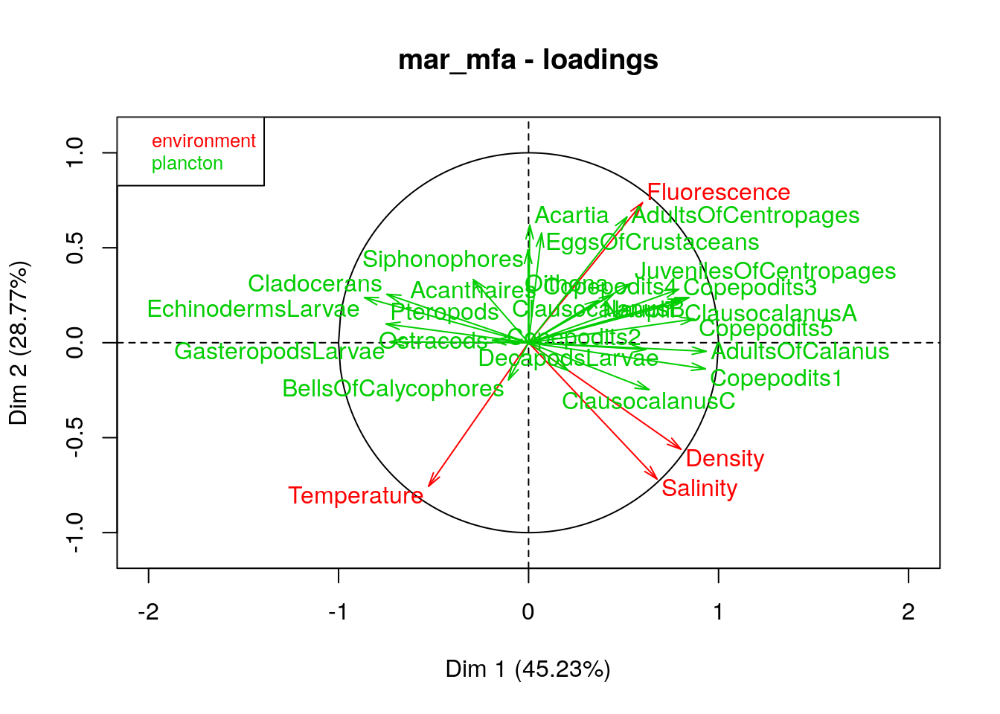
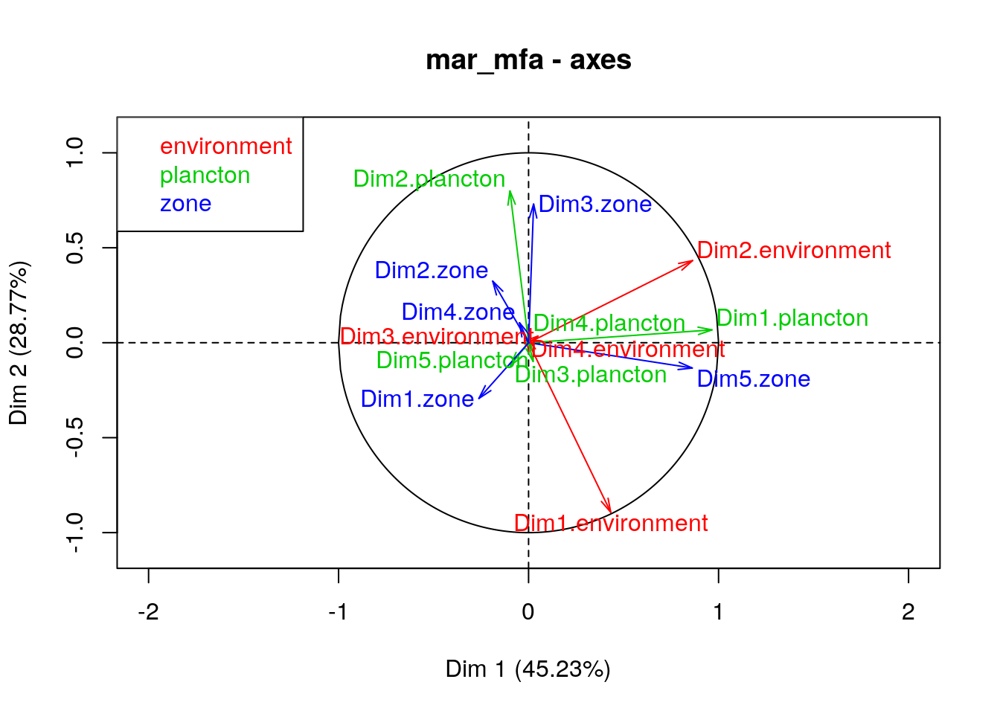
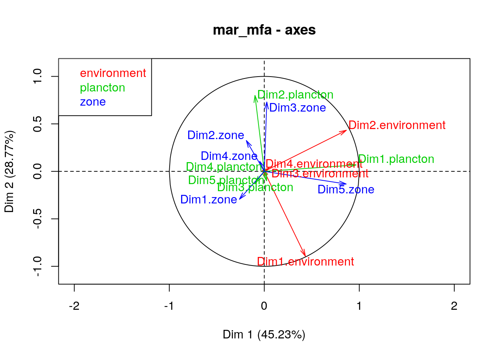
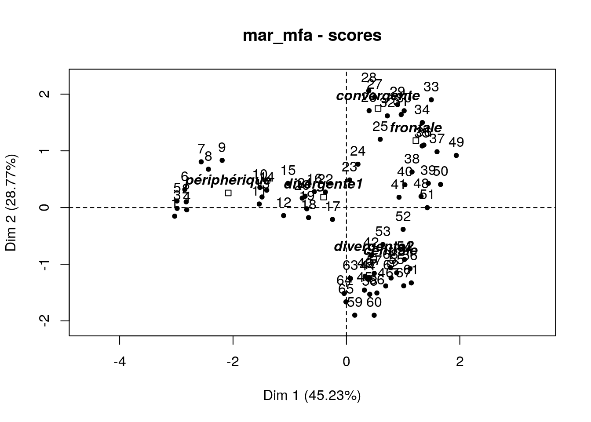
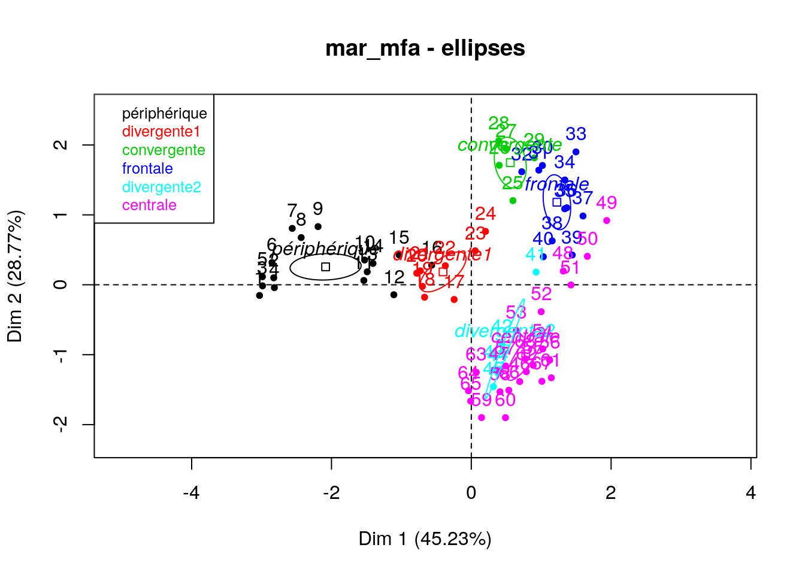
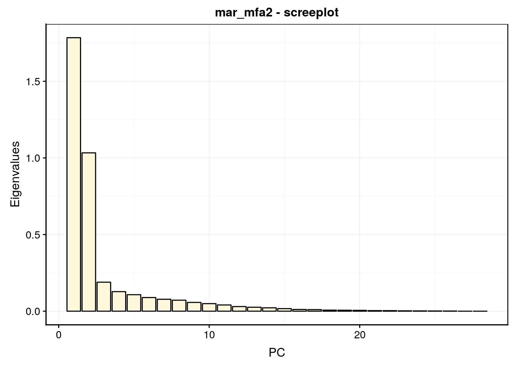
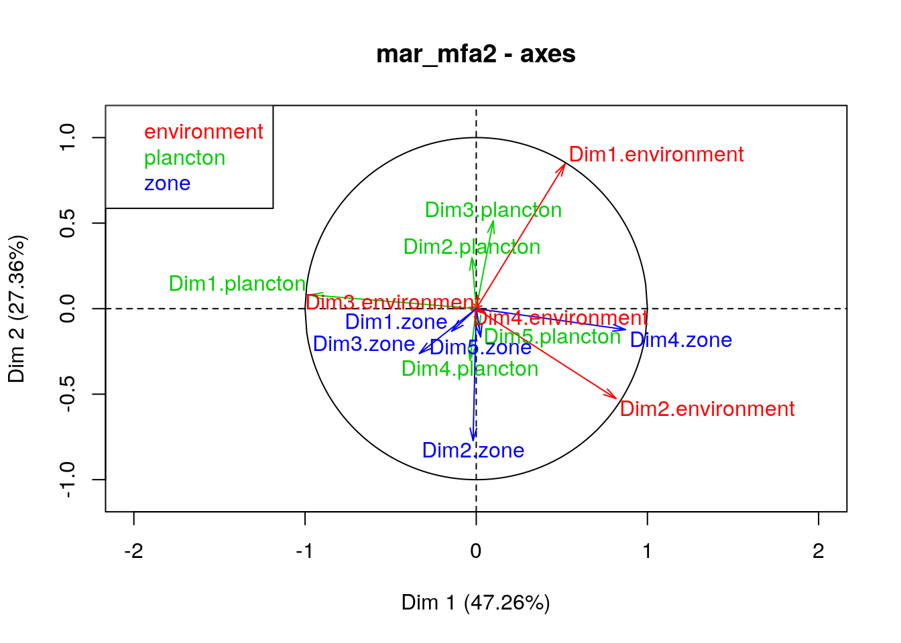
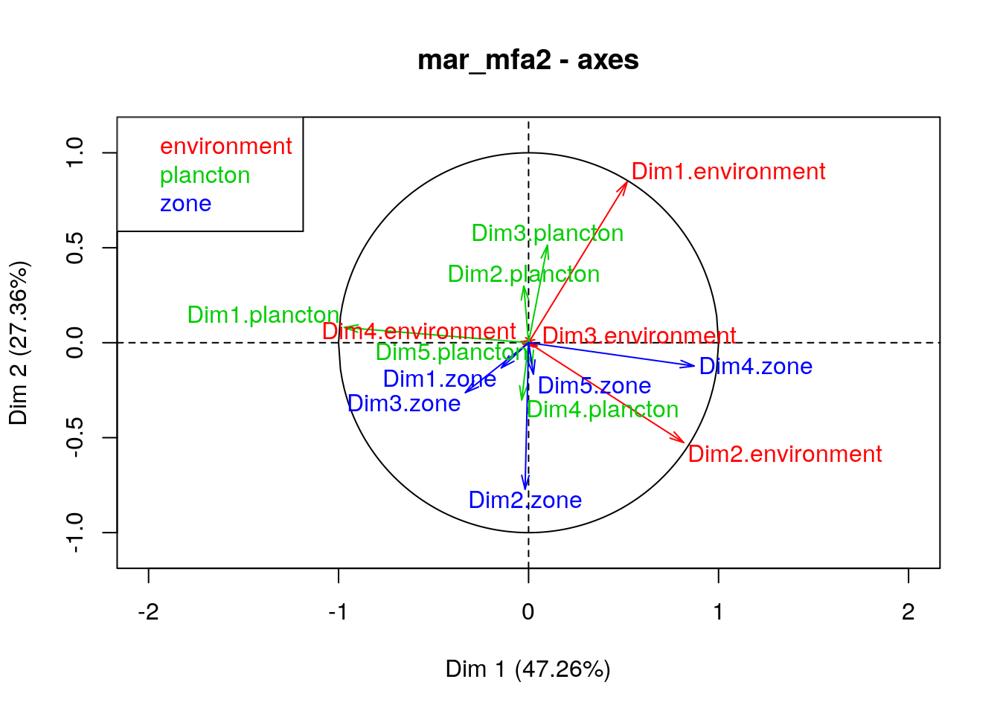
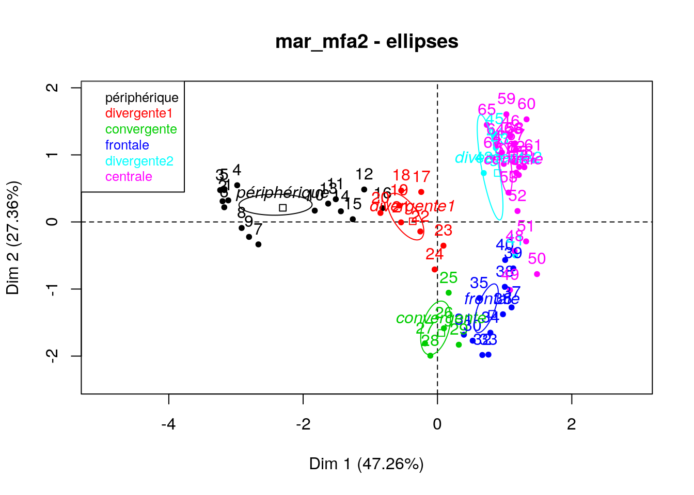
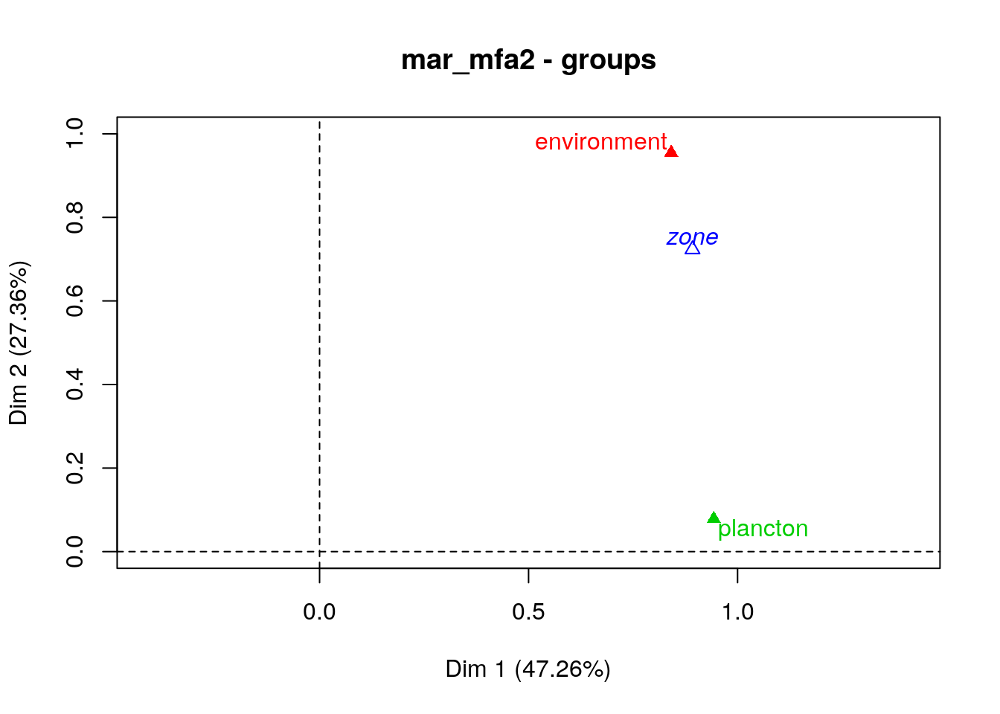

8.1 Analyse factorielle multiple (AFM)
Jusqu’ici nous avons étudié différentes techniques pour explorer des données multivariées soit quantitatives (ACP), soit qualitatives (AFC). Nous n’avons pas abordé encore la question de données mixtes avec des tableaux qui contiennent à la fois des variables quantitatives et des données qualitatives.
Une première approche consiste à convertir des variables afin d’homogénéiser le tableau. La conversion ne peut se faire qu’en dégradant l’information, soit dans le sens quantitatif continu -> quantitatif discret -> qualitatif ordonné -> qualitatif non ordonné -> binaire. Ainsi, dans un tableau contenant quelques variables quantitives, nous pouvons créer des classes pour convertir les variables quantitatives en qualitatives. C’est par exemple ce que nous faisons quand nous remplaçons les indices de masse corporelle IMC dans nos données de biométrie humaine (quantitatif) en classes (tableau des classes proposées par l’OMS21).
| IMC [kg/m2] | Classification OMS |
|---|---|
| < 16,5 | sous-poids sévère |
| 16 - 17 | sous-poids modéré |
| 17 - 18,5 | sous-poids léger |
| 18.5 - 25 | normal |
| 25 - 30 | préobésité |
| 30 - 35 | obésité classe I |
| 35 - 40 | obésité classe II |
| > 40 | obésité classe III |
A l’extrême, il est toujours possible d’encoder n’importe quelle variable sous forme binaire. C’est ce qu’on appelle le codage disjonctif complet (voir, par exemple, ici). Cette approche a non seulement l’avantage de transformer des variables différentes en 0 ou 1 dans un tableau homogène, mais permet aussi de comparer plus de deux variables qualitatives selon une extension de l’AFC dit Analyse en Composantes Multiples ou ACM que nous ne verrons pas dans ce cours mais qu’il est important de mentionner pour mémo ici22.
L’analyse factorielle multiple (AFM, multiple factorial analysis ou MFA en anglais) va permettre d’analyser simultanément plusieurs tableaux de données multivariés, et éventuellement mélanger des tableaux quantititfs et qualitatifs (pour autant que les variables soient homogènes au sein de chaque tableau).
8.1.1 AFM dans SciViews::R
L’AFM n’est pas encore intégrée dans SciViews::R. Le code suivant permet de réaliser notre analyse via l’interface habituelle, soit mfa(data = ...., formula) pour construire l’analyse (calculs en internes basés sur FactoMineR::MFA()), et ensuite nous utiliserons summary() et chart$type() pour les graphiques, où type pourra être “screeplot”, “altscreeplot”, “loadings”, “scores”, “groups”, “axes”, “frequences” ou “ellipses” (nous verrons plus loin ce que représentent tous ces graphiques). Vous pouvez copier-coller le code du chunk suivant au début de vos scripts ou dans un chunk de vos documents R Markdown/Notebook pour l’utiliser.
# Code mfa() version 2
SciViews::R()
mfa <- function(data, formula, nd = 5, suprow = NA, ..., graph = FALSE) {
# TODO: rework Call in the final MFA object
if (is.na(suprow)) suprow <- NULL # MFA uses NULL instead of NA!
if (!rlang::is_formula(formula))
stop("'formula' must be a formula object")
if (!is.null(rlang::f_lhs(formula)))
stop("'formula cannot have left-hand side (must be ~ n1 * type...")
params <- get_groups(list(expr = rlang::f_rhs(formula)))
# data must be a data frame
if (!inherits(data, "data.frame"))
stop("'data' must be a data.frame")
data <- as.data.frame(data) # No tibble or data.table!
# Number of columns in data must match specifications in the formula
if (ncol(data) != sum(params$groups))
stop("You must specify groups in 'formula' for all the columns in 'data'")
# Call FactoMineR::MFA() with corresponding arguments
FactoMineR::MFA(base = data, group = params$groups, type = params$types,
ind.sup = suprow, ncp = nd, name.group = params$names,
num.group.sup = params$suppl, ..., graph = graph)
}
# x is a list with: expr, groups, types, names, suppl
# Note: this is a mess, I need to clean up this code!
get_groups <- function(x) {
items <- as.list(x$expr)
# We should have here '+', '-' or something else in case of last expression
if (items[[1]] == "+") {
x$suppl <- c(FALSE, x$suppl) # Not a supplementary variable
x$expr <- items[[2]] # Second item is next expression
# Third item is the information for that group
# (n, or n * type, or n * type %as% name)
item <- as.list(items[[3]])
} else if (items[[1]] == "-") {
x$suppl <- c(TRUE, x$suppl) # A supplementary variable
x$expr <- items[[2]] # Second item is next expression
# Third item is the information for that group
# (n, or n * type, or n * type %as% name)
item <- as.list(items[[3]])
} else {
# Last expression
x$expr <- NULL
item <- items
}
if (length(item) < 3) { # either n, or +n or -n
if (length(item) == 2) {
x$suppl <- switch(as.character(item[[1]]),
"-" = c(TRUE, x$suppl),
"+" = c(FALSE, x$suppl),
stop("Bad 'formula', see help"))
n <- item[[2]]
} else n <- item[[1]]
if (!is.numeric(n))
stop("Bad 'formula', see help")
x$groups <- c(as.integer(n, x$groups))
x$types <- c("s", x$types)
x$names <- c(NA, x$names)
} else if (item[[1]] == "*") { # n * type or n * type %as% name
if (length(item[[2]]) > 2)
stop("Bad 'formula', see help")
if (length(item[[2]]) == 2) {
x$suppl <- switch(as.character(item[[2]][[1]]),
"-" = c(TRUE, x$suppl),
"+" = c(FALSE, x$suppl),
stop("Bad 'formula', see help"))
n <- item[[2]][[2]]
} else n <- item[[2]]
if (!is.numeric(n))
stop("Bad 'formula', see help")
x$groups <- c(as.integer(n), x$groups)
# Right-hand side after '*': type or type %as% name
subitem <- as.list(item[[3]])
if (subitem[[1]] == "%as%") { # type %as name
x$types <- c(as.character(subitem[[2]]), x$types)
x$names <- c(as.character(subitem[[3]]), x$names)
} else if (length(subitem) == 1 && is.name(subitem[[1]])) { # type only
x$types <- c(as.character(subitem[[1]]), x$types)
x$names <- c(NA, x$names)
} else stop("Bad 'formula', see help") # Error
} else if (item[[1]] == "%as%") { # n %as% name
if (length(item[[2]]) == 2) {
x$suppl <- switch(as.character(item[[2]][[1]]),
"-" = c(TRUE, x$suppl),
"+" = c(FALSE, x$suppl),
stop("Bad 'formula', see help"))
n <- item[[2]][[2]]
} else n <- item[[2]]
if (!is.numeric(n))
stop("Bad 'formula', see help")
x$groups <- c(as.integer(n), x$groups)
x$types <- c("s", x$types) # type by default (s)
x$names <- c(as.character(item[[3]]), x$names)
} else stop("Bad 'formula', see help") # Error
# Is there another expression to evaluate?
if (!is.null(x$expr)) {
x <- get_groups(x)
} else {
# Get correct vector for suppl
if (length(x$suppl) < length(x$groups))
x$suppl <- c(FALSE, x$suppl)
# We need the group indices for the supplementary variables instead
x$suppl <- (1:length(x$groups))[x$suppl]
if (!length(x$suppl)) x$suppl <- NULL
# Fix names
def_names <- paste("group", 1:length(x$groups), sep = ".")
names <- x$names
names[is.na(names)] <- def_names[is.na(names)]
x$names <- names
}
x
}
#form <- ~ -4 %as% Environnement -24*f %as% Plancton +1*f +18
#get_groups(list(expr = rlang::f_rhs(form)))
# TODO: methods for broom...
autoplot.MFA <- function(object,
type = c("screeplot", "altscreeplot", "loadings", "scores", "groups", "axes", "frequences", "ellipses"),
choices = 1L:2L, name = deparse(substitute(object)), col = "black",
fill = "gray", title, ..., env) {
type = match.arg(type)
if (missing(title))
title <- paste(name, type, sep = " - ")
res <- switch(type,
screeplot = object %>.% # Classical screeplot
tibble::tibble(eig = .$eig[, 1], PC = 1:nrow(.$eig)) %>.%
chart(data = ., eig ~ PC) +
geom_col(col = col, fill = fill) +
labs(y = "Eigenvalues", title = title),
altscreeplot = object %>.% # screeplot represented by dots and lines
tibble::tibble(eig = .$eig[, 1], PC = 1:nrow(.$eig)) %>.%
chart(data = ., eig ~ PC) +
geom_line(col = col) +
geom_point(col = "white", fill = col, size = 2, shape = 21, stroke = 3) +
labs(y = "Eigenvalues", title = title),
loadings = object %>.% # Plots of the variables
plot(., axes = choices, choix = "var", title = title, ...),
scores = object %>.% # Plot of the individuals
plot(., axes = choices, choix = "ind", title = title, ...),
groups = object %>.% # Plot of the groups
plot(., axes = choices, choix = "group", title = title, ...),
axes = object %>.% # Plot of the loadings for the various groups
plot(., axes = choices, choix = "axes", title = title, ...),
frequences = object %>.% # Plot of the correpondance analyses
plot(., axes = choices, choix = "freq", title = title, ...),
ellipses = object %>.% # Plot of the individuals with ellipses
FactoMineR::plotellipses(., axes = choices, title = title, ...),
stop("Unrecognized type, must be 'screeplot', 'altscreeplot',
'loadings', 'scores', 'groups', 'axes', 'frequences', or 'ellipses'")
)
if (inherits(res, "ggplot")) {
res
} else {
invisible(res)
}
}
chart.MFA <- function(data, choices = 1L:2L, name = deparse(substitute(data)),
..., type = NULL, env = parent.frame())
autoplot.MFA(data, choices = choices, name = name, ..., type = type, env = env)
class(chart.MFA) <- c("function", "subsettable_type")Nous allons aborder cette technique puissante mais un peu plus complexe qu’est l’AFM sur la base d’un jeu de données que nous connaissons bien maintenant via nos exercices précédents : la communauté de plancton le long d’un transect entre Nice et la Corse.
8.1.2 Plancton en Méditerranée
Les jeux de données marphy et marbio dans le package R pastecs présentent deux tableaux de données complémentaires. Le premier, marphy reprend les mesures environnementales de base (température, salinité et densité des masses d’eaux), ainsi qu’une information indirecte sur la concentration en phytoplancton : la fluorescence de la chlorophylle. Le second tableau marbio reprend les effectifs observés dans 24 groupes de zooplancton mesurés sur des échantillons issus des mêmes stations que marphy. Ces stations sont réparties de manière équidistante le long d’un transect entre le continent (vers Nice, station n°1) et la Corse (à Calvi, station n°68).

Exemple d’organismes appartenant au zooplancton (Matt Wilson & Jay Clark, NOAA NMFS AFSC, licence : domaine public)
Jusqu’à présent, nous avions utilisé ces deux tableaux séparément. Notre objectif ici est de les analyser ensemble. Nous allons commencer par considérer ces deux tableaux comme quantitatifs. Dans ce cas, l’AFM réalisera deux ACP, une par tableau. Ensuite, elle pondèrera les données de chacun en fonction de la part de variance sur le premier axe respectif. Pour finir, elle réalisera une ACP globale avec toutes les données qui conservera la structure de chacun des deux tableaux initiaux grâce à la pondération appliquée en interne.
Les données environmentales dans marphy étant mesurées dans des unités différentes, nous les standardiserons. Concernant le plancton dans marbio, nous allons pondérer les espèces rares par rapport aux espèces abondantes en tranformant \(log(x + 1)\) les abondances observées avec la fonction log1p(). Enfin, nous rajouterons les différentes masses d’eaux identifiées par ailleurs (voir l’aide ?pastecs::marphy) dans marzones que nous utiliserons comme troisième tableau de variables supplémentaires (un tableau que nous n’utilisons pas dans l’analyse, mais que nous représenterons dans les graphiques afin d’aider à leur interprétation). Voici donc la constitution d’un gros tableau qui reprend toutes les données dans la variable mar :
marzones <- factor(c(
rep("périphérique", 16),
rep("divergente1", 8),
rep("convergente", 5),
rep("frontale", 11),
rep("divergente2", 5),
rep("centrale", 23)),
levels = c("périphérique", "divergente1", "convergente",
"frontale", "divergente2", "centrale"))
bind_cols(
read("marphy", package = "pastecs"),
log1p(read("marbio", package = "pastecs"))) %>.%
mutate(., Zone = marzones) ->
marCe tableau n’a aucunes valeurs manquantes et il contient 29 variables :
names(mar)# [1] "Temperature" "Salinity"
# [3] "Fluorescence" "Density"
# [5] "Acartia" "AdultsOfCalanus"
# [7] "Copepodits1" "Copepodits2"
# [9] "Copepodits3" "Copepodits4"
# [11] "Copepodits5" "ClausocalanusA"
# [13] "ClausocalanusB" "ClausocalanusC"
# [15] "AdultsOfCentropages" "JuvenilesOfCentropages"
# [17] "Nauplii" "Oithona"
# [19] "Acanthaires" "Cladocerans"
# [21] "EchinodermsLarvae" "DecapodsLarvae"
# [23] "GasteropodsLarvae" "EggsOfCrustaceans"
# [25] "Ostracods" "Pteropods"
# [27] "Siphonophores" "BellsOfCalycophores"
# [29] "Zone"Il y a trois groupes distrincts :
- les 4 premières colonnes comme variables quantitatives continues pour l’environnement,
- les 24 colonnes suivantes comme quantitatives pour le plancton,
- la dernière colonne qui caractérise les masses d’eaux (zone) comme variable qualitative supplémentaire.
Représentation des trois groupes du tableau dans les couleurs qui seront utilisées ensuite dans l’AFM.
Avant de pouvoir réaliser notre AFM, nous devons comprendre comment écrire la formule qui va décrire nos données. Pour chaque groupe, nous ajouterons un terme à la formule qui contient trois composante :
- Le nombre
nde colonnes constituant le groupe (les colonnes du tableau composite sont comptées de gauche à droite), - Le
typede variable considérée. Quatre types sont possibles. Les variables continues à standardiser avant d’être utilisées dans une ACP sont de type s. Les variables quantitative également à utiliser selon l’ACP mais sans standardisation sont de type c. Les données qualitatives assimilables à un tableau de contingence à double entrée (données de fréquences d’observations, dénombrements, etc.) sont de type f et seront traitées comme une AFC, et enfin, les variables qualitatives classiques sont de type n et seront traitées selon une analyse factorielle multiple AFM. - Le
nomque l’on veut donner à chaque groupe de variables pour l’identifier dans l’analyse.
Un groupe est décrit dans la formule comme n * type %as% nom (donc avec les opérateurs * et %as%). Chaque groupe inclu dans l’analyse est précédé d’un signe plus + (le premier plus peut être omis de la formule). Les groupes supplémentaires (à soustraire à l’analyse) sont précédés d’un signe moins -. Et enfin, tous les groupes sont décrits à la droite de la formule, donc, après le ~. Dans notre cas concret ici, cela donne :
~ 4*s %as% environnement + 24*c %as% plancton - 1*n %as% zoneL’analyse se fait en appelant mfa(data = ...., formula). Nous assignons le résultat du calcul à mar_mfa :
mar_mfa <- mfa(data = mar,
~ 4*s %as% environment + 24*c %as% plancton - 1*n %as% zone)Le résumé de l’analyse renvoyé par summary() donne beaucoup d’information.
summary(mar_mfa)#
# Call:
# FactoMineR::MFA(base = data, group = params$groups, type = params$types,
# ind.sup = suprow, ncp = nd, name.group = params$names, num.group.sup = params$suppl,
# graph = graph)
#
#
# Eigenvalues
# Dim.1 Dim.2 Dim.3 Dim.4 Dim.5 Dim.6
# Variance 1.801 1.145 0.215 0.121 0.116 0.103
# % of var. 45.228 28.768 5.409 3.047 2.908 2.575
# Cumulative % of var. 45.228 73.996 79.405 82.452 85.360 87.935
# Dim.7 Dim.8 Dim.9 Dim.10 Dim.11 Dim.12
# Variance 0.092 0.063 0.057 0.047 0.032 0.030
# % of var. 2.320 1.578 1.430 1.179 0.804 0.754
# Cumulative % of var. 90.256 91.834 93.264 94.443 95.247 96.001
# Dim.13 Dim.14 Dim.15 Dim.16 Dim.17 Dim.18
# Variance 0.028 0.021 0.019 0.016 0.013 0.012
# % of var. 0.710 0.537 0.477 0.397 0.328 0.298
# Cumulative % of var. 96.712 97.249 97.726 98.124 98.452 98.750
# Dim.19 Dim.20 Dim.21 Dim.22 Dim.23 Dim.24
# Variance 0.011 0.010 0.008 0.005 0.005 0.004
# % of var. 0.276 0.242 0.211 0.123 0.115 0.097
# Cumulative % of var. 99.026 99.267 99.479 99.602 99.717 99.814
# Dim.25 Dim.26 Dim.27 Dim.28
# Variance 0.003 0.003 0.001 0.000
# % of var. 0.080 0.070 0.037 0.000
# Cumulative % of var. 99.893 99.963 100.000 100.000
#
# Groups
# Dim.1 ctr cos2 Dim.2 ctr cos2 Dim.3
# environment | 0.864 47.958 0.408 | 0.967 84.430 0.511 | 0.056
# plancton | 0.937 52.042 0.781 | 0.178 15.570 0.028 | 0.160
# ctr cos2
# environment 25.844 0.002 |
# plancton 74.156 0.023 |
#
# Supplementary group
# Dim.1 cos2 Dim.2 cos2 Dim.3 cos2
# zone | 0.849 0.144 | 0.753 0.113 | 0.220 0.010 |
#
# Individuals (the 10 first)
# Dim.1 ctr cos2 Dim.2 ctr cos2 Dim.3
# 1 | -3.029 7.493 0.788 | -0.153 0.030 0.002 | -1.203
# 2 | -2.826 6.522 0.907 | 0.100 0.013 0.001 | -0.613
# 3 | -2.986 7.280 0.923 | -0.015 0.000 0.000 | -0.558
# 4 | -2.817 6.479 0.917 | -0.040 0.002 0.000 | -0.324
# 5 | -2.988 7.290 0.913 | 0.116 0.017 0.001 | -0.530
# 6 | -2.850 6.635 0.889 | 0.319 0.131 0.011 | -0.470
# 7 | -2.561 5.357 0.796 | 0.807 0.835 0.079 | -0.306
# 8 | -2.434 4.837 0.761 | 0.676 0.586 0.059 | -0.012
# 9 | -2.192 3.923 0.651 | 0.832 0.889 0.094 | 0.200
# 10 | -1.526 1.902 0.708 | 0.355 0.161 0.038 | 0.642
# ctr cos2
# 1 9.881 0.124 |
# 2 2.569 0.043 |
# 3 2.126 0.032 |
# 4 0.716 0.012 |
# 5 1.915 0.029 |
# 6 1.511 0.024 |
# 7 0.638 0.011 |
# 8 0.001 0.000 |
# 9 0.272 0.005 |
# 10 2.815 0.125 |
#
# Continuous variables (the 10 first)
# Dim.1 ctr cos2 Dim.2 ctr cos2 Dim.3
# Temperature | -0.526 7.649 0.277 | -0.756 24.810 0.571 | 0.281
# Salinity | 0.676 12.621 0.457 | -0.718 22.364 0.515 | -0.084
# Fluorescence | 0.600 9.929 0.359 | 0.737 23.603 0.544 | -0.065
# Density | 0.802 17.758 0.643 | -0.561 13.654 0.314 | -0.147
# Acartia | 0.007 0.000 0.000 | 0.711 2.381 0.384 | 0.410
# AdultsOfCalanus | 1.721 8.883 0.873 | -0.084 0.033 0.002 | 0.102
# Copepodits1 | 1.662 8.288 0.866 | -0.245 0.283 0.019 | 0.265
# Copepodits2 | 0.708 1.503 0.381 | -0.041 0.008 0.001 | 0.400
# Copepodits3 | 0.764 1.750 0.625 | 0.272 0.349 0.079 | 0.104
# Copepodits4 | 0.801 1.925 0.654 | 0.229 0.246 0.053 | 0.147
# ctr cos2
# Temperature 18.192 0.079 |
# Salinity 1.641 0.007 |
# Fluorescence 0.989 0.004 |
# Density 5.022 0.022 |
# Acartia 4.215 0.128 |
# AdultsOfCalanus 0.262 0.003 |
# Copepodits1 1.764 0.022 |
# Copepodits2 4.003 0.121 |
# Copepodits3 0.271 0.012 |
# Copepodits4 0.544 0.022 |
#
# Supplementary categories
# Dim.1 cos2 v.test Dim.2 cos2 v.test Dim.3
# périphérique | -2.084 0.974 -7.052 | 0.257 0.015 1.090 | 0.117
# divergente1 | -0.404 0.291 -0.900 | 0.185 0.061 0.516 | 0.306
# convergente | 0.558 0.083 0.959 | 1.747 0.810 3.765 | 0.246
# frontale | 1.225 0.484 3.282 | 1.181 0.450 3.968 | -0.313
# divergente2 | 0.478 0.129 0.822 | -0.918 0.474 -1.978 | -0.419
# centrale | 0.779 0.373 3.399 | -0.988 0.599 -5.403 | 0.000
# cos2 v.test
# périphérique 0.003 1.143 |
# divergente1 0.166 1.968 |
# convergente 0.016 1.221 |
# frontale 0.032 -2.424 |
# divergente2 0.099 -2.084 |
# centrale 0.000 -0.002 |Ne nous intéressons pour l’instant qu’au tableau Eignenvalues qui reprend les valeurs propres, c’est-à-dire, la part de variance sur les axes de l’ACP globale réalisée. Nous voyons qu’une vairance cumulée de 74% (Cumulative % of var.) est représentée sur les deux premiers axes Dim.1 et Dim.2. Le graphe des éboulis nous représente la partition de la variance sur les différents axes comme pour l’ACP :
chart$scree(mar_mfa, fill = "cornsilk")
Ici, on voit très clairement que deux axes suffisent. La suite de l’analyse se fait à peu près comme une ACP, mais des données et graphes supplémentaires nous permet d’interpréter les groupes de variables les uns par rapport aux autres. Le graphique des variables s’obtient comme pour l’ACP avec chart$loadings(). Il est ic plus encombré car nous avons 28 variables. La direction des différents vecteurs par rapport aux dimensions de l’AFM et entre eux nous indique la corrélation directe (même sens), inverse (opposition), ou l’absence de corrélation (vecteurs orthogonaux). Ce graphique permet aussi d’orienter le plan de l’AFM pour nos graphiques ultérieurs.
chart$loadings(mar_mfa, choices = c(1, 2))
Toutes les variables environnementales sont très bien représentées dans le premier plan de l’AFM (normes quasiment de un). Nous observons une corrélation inverse entre la température (en bas à gauche du premier plan de l’AFM) et la fluorescence (qui pointe en haut à droite du plan). La salinité et la densité sont corrélées positivement entre elles, mais ne le sont pas avec les deux autres variables environnementales. Les salinités et densités élevées sont en bas à droite sur le plan de l’AFM.
Pour le plancton, nous avons pas mal de choses car plusieurs vecteurs ont une norme importante (nous ignorons les autres, trop mal représentés dans le premier plan de l’AFM). Il faut pointer l’opposition entre des groupes comme GasteropodsLarvae, EchinodermLarvae, Cladocerans et Pteropods qui pointent vers la gauche, et les copépodes (Calanus, Clausocalanus, CopepoditsX, etc.) qui pointent vers la droite. Le découpage selon le second axe pour le plancton est moins net.
D’autre part, les variables environnementales pour lesquelles deux dimensions fortes se dégagent sont placées en oblique par rapport à la dimension forte du plancton sur Dim 1. cela signifie que les deux dimensions environnementales sont partiellement corrélées avec la présence de ces groupes planctoniques.
L’AFM est en fait un compromis réalisé entre des analyses indépendantes faites sur chaque groupe. Le graphique suivant montre comment ce compromis a été construit :
chart$axes(mar_mfa, choices = c(1, 2))
Ce graphique est similaire au précédent, si ce n’est qu’au lieu de projetter les variables initiales dans le plan de l’AFM, il projette les composantes principales des différentes ACP séparées dans ce même plan. Il montre comment un compromis entre les différentes ACP est réalisé dans l’AFM globale. Ici, nous voyons que ce compromis est relativement proche de l’ACP plancton (Dim.1 et Dim.2 plancton en vert pointant dans la même direction que les axes de l’AFM). Nous voyons aussi qie les deux premières dimensions de l’ACP environnement (Dim.1 et Dim.2 environnement en rouge) pointent en oblique par rapport à ces mêmes axes. La variable supplémentaire zone est également projettée, mais elle est moins corrélée avec les autres axes (sauf sa Dim. 5 avec l’axe 1).
Tout comme pour l’ACP, nous pouvons maintenant interpréter le graphique dans l’espace des individus, normalement avec chart$scores().
chart$scores(mar_mfa, choices = c(1, 2))
Cependant, nous pouvons aussi profiter de la variable supplémentaire zone pour colorer les points en fonction des masses d’eaux et représenter des ellipses pour chaque masse d’eau sur le graphique. La variante avec ces ellipses se réalise avec chart$ellipses() et il est plus clair dans pareil cas.
chart$ellipses(mar_mfa, choices = c(1, 2), keepvar = "Zone")
Les différentes zones sont bien individualisées, à l’exception de :
Certaines stations en bordure de zones (par exemple, la 16 est dans la zone de convergence1 sur le graphique alors qu’elle est libellée comme zone périphérique). La dynamique des masses d’eaux est complexe autour d’une zone frontale comme ici. Il y a des turbulences, et les frontières ne sont toujours très nettes. Ce graphique propose clairement un découpage légèrement différent… intéressant !
La zone de divergence2 n’est pas fondamentalement différente de la zone centrale.
Notez qu’on a une progression le long du transect de la gauche (Nice) vers le centre, puis vers le haut à droite (le front) et puis vers le bas à droite (Calvi).
Si on interpète ce graphique des individus en fonction de l’orientation donnée sur base des variables, on peut dire que :
Nice (zone périphérique) s’individualise très fort du reste, et c’est le plancton qui explique essentiellement cette différence avec les groupes identifiés tirant vers la gauche (GasteropodsLarvae, EchinodermLarvae, Cladocerans et Pteropods). Nice est aussi à une température et fluorescence moyenne.
Toutes les autres zones sont caractérisées par une communauté planctonique différente de Nice, mais homogène, avec la zone divergente1 qui est logiquement intermédiaire (zone de mélange des masses d’eaux périphérique et frontale).
La zone frontale est caractérisée par la température la plus basse et la fluorescence la plus élevée alors que la salinité est moyenne. C’est logique : on a une remontée d’eaux froides des profondeurs riches en nutriments que le phytoplancton utilise (fluorescence élevée signifie phytoplancton élevé).
La zone centrale en Corse à Calvi est caractérisée par la salinité la plus élevée, une température élevée et une fluorescence basse, caractéristiques d’une zone oligothrophe. Comme nous l’avons déjà noté, la communauté planctonique est similaire à ce qu’on rencontre au large au milieu du transect, et elle tranche sensiblement avec celle rencontrée du côté niçois.
Revenons sur la façon dans l’AFM est construite (le fameux “compromis”), et son interprétation par rapport aux masses d’eaux. Le graphique suivant montre les relations entre les groupes.
chart$groups(mar_mfa, choices = c(1, 2))
Ce graphique représente les groupes proches des axes dont ils sont responsables dans la structure générale de l’AFM. Nous voyons ici plancton proche de l’axe 1. Part contre, environnement est bien représenté (car il est loind du centre), mais est entre l’axe 1 et l’axes 2. Nous avons déjà noté cela précédemment.
La variable supplémentaire zone est aussi représentée à proximité de la structure qui lui correspond le mieux. Nous voyons que zone est plus proche d’environnement, ce qui signifie que les masses d’eau sont plutôt structurées en rapport avec les variables environnementales qu’en rapport avec les communautés planctoniques.
8.1.3 AFM avec données mixtes
Jusqu’ici, nous avons réalisé une AFM avec uniquement des données quantitatives, mais l’AFM peut aussi traiter des données qualitatives, sous forme de tableaux de contingence à double entrée, ou sous forme de variables facteurs. Nous allons tester cette variante sans sortir de notre exemple du plancton méditerranéen. En effet, le tableau plancton peut aussi être considéré comme un tableau de contingence à double entrée. Il nous suffit de changer le type de c à f (pour l’analyse des fréquences) dans la formule pour traiter à présent le plancton sous la forme d’une AFC dans mar_mfa2 :
mar_mfa2 <- mfa(data = mar,
~ 4*s %as% environment + 24*f %as% plancton - 1*n %as% zone)Rappelons-nous que l’AFC se ramène à une étape de son analyse à une ACP. C’est comme cela qu’il est possible de l’introduire dans l’AFM : à partir de l’étape ACP, les pondérations sont calculées et ajustées, et ensuite, une ACP globale est réalisée en la mélangeant avec les autres ACP.
Au lieu d’imprimer tout à l’aide de summary(), si nous souhaitons seulement les premières valeurs propres, nous pouvons aussi les extraire de l’objet comme ceci :
head(mar_mfa2$eig)# eigenvalue percentage of variance cumulative percentage of variance
# comp 1 1.78441859 47.260175 47.26017
# comp 2 1.03313254 27.362427 74.62260
# comp 3 0.18926229 5.012596 79.63520
# comp 4 0.12752685 3.377538 83.01274
# comp 5 0.10759137 2.849548 85.86228
# comp 6 0.08901514 2.357558 88.21984Ici, les deux premiers axes comptent pour 74,6% de variance cumulée. Le graphe des éboulis confirme que deux axes suffisent :
chart$scree(mar_mfa2, fill = "cornsilk")
Le graphique des variables ne montre plus que celles relatives à l’ACP, donc seulement le groupe environnement. Les conclusions à leur sujet sont les mêmes, mais attention, le premier plan de la nouvelle AFM se présente en miroir haut-bas par rapport à notre première analyse23.
chart$loadings(mar_mfa2, choices = c(1, 2))
chart$axes(mar_mfa2, choices = c(1, 2))
Les conclusions sont similaires sur les axes. Voyons maintenant l’espace des individus, toujours avec les couleurs et les ellipses par zones :
chart$ellipses(mar_mfa2, choices = c(1, 2), keepvar = "Zone")
Encore une fois ici, le résultat est sensiblement le même (gardez à l’esprit que ce graphique est la visualisation en miroir haut-bas par rapport à l’analyse précédente).
Les groupes montrent toujours le groupe zone plus proche d’environnement que de plancton.
chart$groups(mar_mfa2, choices = c(1,2))
La partie AFC de l’analyse est accessible via chart$frequences() :
chart$frequences(mar_mfa2, choices = c(1, 2))
Ici aussi les quatre classes de plancton EchinodermLarvae, GasteropodsLarvae, Clodocerans et Pteropods s’individualisent à gauche, contre tous les autres à droite. Également les stations proches de Nice se retrouvent à la gauche, et toutes les autres à droite.
Pour en savoir plus
Des slides (en anglais) qui détaillent les calculs sous-jacents à l’AFM, ainsi que d’autres calculs non abordés ici (le RV, les points partiels, …),
Une vidéo d’introduction à l’AFM en français (8:37, première partie d’une série de 4 vidéos),
La résolution de l’exemple sur les vins de Loire présenté dans la vidéo ci-dessus dans R (en anglais).
Le site de FactoMineR qui implménete la fonction
MFA()sur laquelle notre analyse se base,Un exemple d’application en biologie avec des données de génomique faisant intervenir une AFM,
Numerical Ecology with R traite en détail de nombreuses méthodes multivarées avec illustrations dans R (ouvrage recommandé pour tous ceux qui explorent des données multivariées en écologie, en anglais).
Si vous êtes intéressé par l’ACM et le codage disjonctif complet, voyez cette vidéo.↩
Les ACP sont définies au signe près. or une inversion de signe dans une dimension a pour effet de faire apparaitre les graphiques en miroir.↩